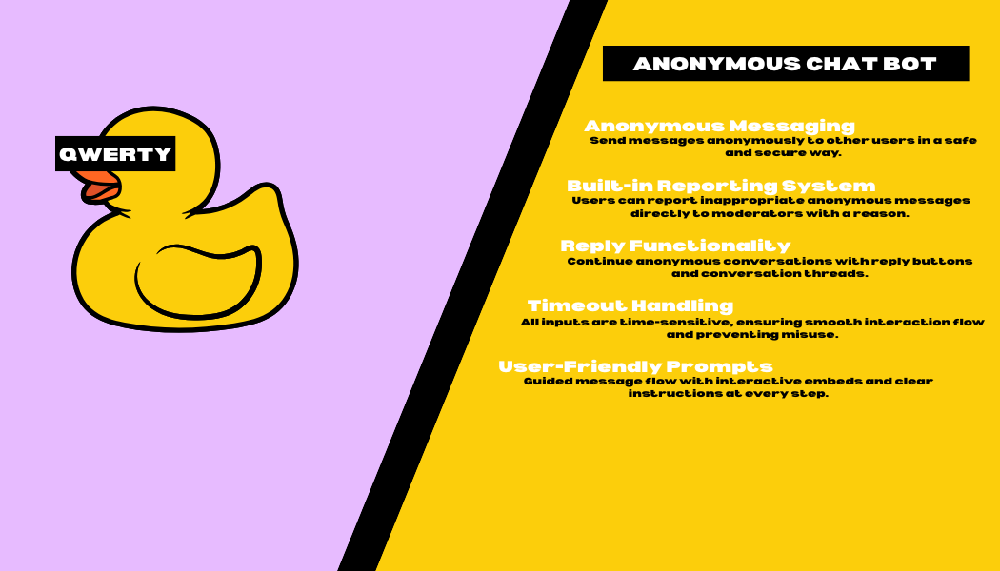
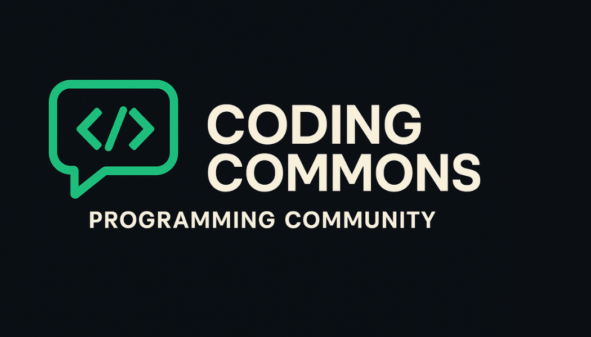
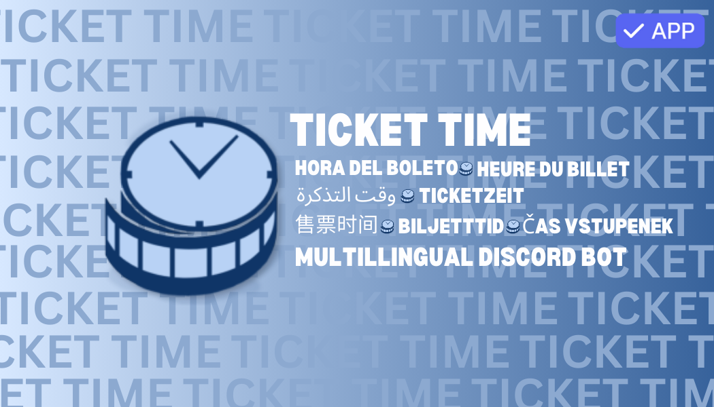

My Projects.
I have worked on a variety of projects, both personal and professional. Here are some of the projects I have worked on:
Qwerty | The Anonymous Discord Chat Bot
May 2025 - Present Day
Qwerty is a Python-based anonymous messaging system built on top of discord.py. Designed for privacy-focused interactions, Qwerty enables users to send anonymous messages within Discord DMs, while incorporating a robust moderation system with reporting, and allowing for replies. Laying the foundation for future features such message threading.
Built with extensibility in mind, Qwerty is ideal for the Discord community that value user expression while maintaining safety and accountability — and it's structured to support future integrations like web-based dashboards or logging systems.
The Coding Commons
April 2025 - Present Day
Coding Commons is a collaborative developer hub and Discord server built to empower coders of all skill levels. With channels dedicated to support, feedback, and project sharing, it fosters a welcoming environment for learning, collaboration, and innovation in programming.
The community hosts events, coding challenges, and partnerships, while promoting open-source development and ethical coding. Future plans include a public knowledge base, bot integrations, and a resource library to further support the global dev community.
Ticket Time
October 2024 - Present Day
Ticket Time is a multilingual Discord bot that helps servers manage support tickets efficiently with simple, easy to use commands.
I created Ticket Time to make it easier for communities to handle support requests in a professional, organized, and user-friendly way—no coding required.
Launchpad
April 2025 - Present Day
Launchpad is a python framework built around discord.py that enables you to easily create a modular discord bot along with an API, which should make it easier to introduce a web dashboard later on.
We created this framework, because we often duplicated "loader" code across our discord bot projects, and it has become an endeavour to maintain them all.

... and many more!